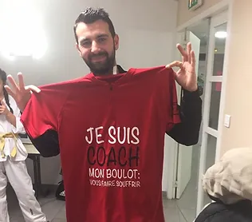

Frouzins Taekwondo
Le Frouzins Athletic Club Taekwondo est présidé par Mr Vigilant Rony et accueille ses adhérents
depuis 2008 au
Dojo - 10 Avenue de Gascogne 31270 Frouzins (sur le parking de la Salle des fêtes Latapie).
C'est donc dans des locaux accueillants que Fanny Burguion, le professeur, enseigne sa
passion à 190
licenciés, petits et grands. Cette association se complète avec une Trésorier et un secrétaire
bénévoles.
Dès 3 ans révolus, les petits taekwondoïstes peuvent venir se défouler sur les tapis rouges,
bleus et jaunes
du Dojang. Fanny est diplômée dans le handisport également, donc les enfants en situation de
handicaps physiques
et mentaux sont intégrés. Mais aussi des cours combat avec d'excellents résultats.
Beaucoup de jeunes se sont pris de passion pour ce sport et ont évolué jusqu'à la ceinture
noire, grâce au
dynamisme et à la volonté de leur "maître" Fanny Burguion.
Tournefeuille Taekwondo
Le club de Tournefeuille a vu le jour en 2005 sous la direction sportive de Fanny BURGUION
diplômée d'état.
Aujourd'hui présidé par Jeremy Burguion avec des bénévoles souriants et disponibles comme
Katia Pene,
Severine brunet, Fabrice Rodriguez et Christian COUMES Un club loisirs où la bonne ambiance et
l'occasion de se
défouler sont présents.
Fanny est diplômée dans le handisport également donc les enfants en situation de handicaps
mentaux sont
intégrés mais aussi des cours combat avec de bons résultats: Selma Sahmi double championne de
France en minime
bronze en benjamine Jean François Toure champion de France junior et 3 fois médaille de bronze
en -21 ans Imran
Habibi champion de France minime Assya Ben saad bronze en France cadette Lisea vice championne
de France en
minime et bronze en benjamine par équipe Adhe Koukoui champion de France veteran.
-

BURGUION FANNY
- 8 fois championne de France consécutive
- 2 fois vice championne de France
- 1 fois médaillée de bronze championnat de France
- Podiums internationaux et quart de finaliste au championnat d'Europe junior
- Ceinture noire 2 ème dan
-

BURGUION JEREMY
- 5 fois champion de France combat
- Plusieurs fois médaillé internationnal
- 2nd à la coupe du monde francophone en senior
- Ceinture noire 1 ème dan